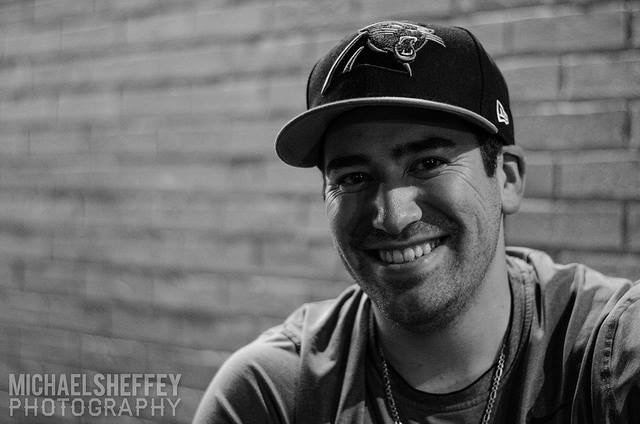

About Me
I was born and raised in Shelby, North Carolina to Jay and Carol Bridges on Febuary 22, 1992. I grew up playing baseball and had many interests. I went to college at Wofford College to play baseball, but didn't know what I would study as I had an interest in architecture but that wasn't offered there. I eventually transferred to Limestone College where I became a biology major and started 3 years at shortstop playing baseball. After graduating from Limestone, I found myself not knowing what I wanted for a career. Lost and confused, I decided to go to work at my famiily's barbecue restaurant.
After six months of working as a dishwasher, I was determined to find my career path and decided to intern at a local IT company. Four months later, I applied and was accepted into a coding bootcamp in downtown Raleigh and moved here to persue a career as a developer. Initially, I didn't have any luck finding a developer job and took what I could working in IT as a Help Desk Analyst. Now I am trying to revamp my skills and learn through UNC Chapel Hill Coding Bootcamp. I am excited about how the future will unfold. TO BE CONTINUED...
Connect with Me